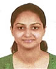

Faculty
Message from The Principal
The single most important mission of a good institution is to equip young men and women with knowledge, skill and personal attribute consistent with the need of society. Keeping this in view the Nightingale Institute of Nursing continuously strive to maintain qualitative environment, which is conducive for effective learning.
Our Institute was established in September 2003 to meet the ever-growing demand for trained professional Nurses for Health Care Industries. Our Nursing Program is approved by Indian Nursing Council, U.P. medical faculty, Government of Uttar Pradesh and affiliated to Choudhary Charan Singh University. Meerut. We work closely with many super specialty hospitals Viz. Northern Railway Central Hospital New Delhi, Fortis Hospital Noida, Metro Hospital Noida, Lal Bahadur Shastri Hospital New Delhi, IHBAS Delhi, and other health care agencies such as District Hospital and Primary Health Centre.
Ms Lavanya Nandan, Principal
M.Sc.(Nursing), OBG
In order to develop overall personality students are encouraged to conduct and participate in various interactive Programmes involving faculty and eminent personalities from various hospitals and Institute.
On behalf of Nightingale Education Society, I welcome you to join any of our career oriented Nursing courses and wish you productive and enriching years with us.
Students at Nightingale Institute of Nursing receive training in state-of-the-art knowledge from our distinguished faculty members, as well as from many visiting expert clinical preceptors in Delhi, NCR area.Our graduates, who will lead nursing in the next century, are prepared to work in community, hospitals and related settings, in private health care centers and in collaborative practices with physicians.
The faculty of the institute are of experienced professional nurses who hold academic degree like B.Sc. Nursing, M.Sc. Nursing and M.Phil and participates in different professional organizations at the local, state and national levels. In addition, they have held clinical, research and administrative positions in a variety of health care agencies.
All modern Audio-Visual Aids including OHP, LCD Projector, Computers, World's top class Films on Nursing Education etc, are used in teaching-learning process.
Learning is a lifelong process which requires a commitment to personal and professional growth and continued development of individual ability. This pursuit of knowledge and wisdom is the responsibility of both faculty and students.
Our Faculty
- Ms Lavanya Nandan
Principal
M.Sc.(N), OBG - P Jony Sharma
Associate Professor - Thongam Kapeelta Devi
Associate Professor - Ms. Pushpinderjit
Lecturer
M.Sc. (N), P.B.B.Sc. (N), GNM  Ms. Lovesy Lukose
Ms. Lovesy Lukose
Lecturer
M.Sc.(N), Med. Surgical- Ms. Supriya S Govekar
Lecturer
M.Sc.(N), Med. Surgical - Ms. Hemalatha AV
Lecturer
M.Sc.(N), Paediatric Nursing - Ms.P Elavarasi
Lecturer
M.Sc.(N), Mental Health Nursing - Ms. Raji Shankar
Lecturer
Paediatric Nursing  Ann Gladis
Ann Gladis
Lecturer- Shivani Wesley
Lecturer - Prity Pandey
Lecturer - Sibi Samuel
Lecturer - Ligy Mary Thomas
Lecturer - Indu Bala
Lecturer - Ms. Geetanjali
Lecturer
Mental Health Nursing - Ms. Glory Tripathi
Lecturer
Mental Health Nursing - Ms. Neethu Elsa George
Lecturer
Medical Surgical Nursing - Ms. Neha Saini
Lecturer
Paediatric Nursing - Ms. Pratibha Gaur
Lecturer
Obs & Gyne Nursing - Ms. Shivangi Sharma
Lecturer
Obs & Gyne Nursing - Riju Mammen
Lecturer
Medical Surgical Nursing - Ms. Tsering Tsomo
Lecturer
Obs & Gyne Nursing - Asha Nadar
Lecturer
Community Health Nursing - Karthika Jayan
Lecturer - Ms. Leya Baby
Lecturer
Paediatric Nursing - Ms. Priyanka Sahay
Lecturer
Community Health Nursing - Towar Shilshi Lamkang
Lecturer
Med. Surgical - Ningombam Rabita Devi
Lecturer
Med. Surgical - Shilpa Katoch
Lecturer
Obs & Gyne Nursing - Nishtha Thakur
Lecturer
Mental Health Nursing - Diksha Rana
Lecturer
Mental Health Nursing - Amrita Chauhan
Lecturer
Community Health Nursing - Mrs. Jeny Rachel
Nursing Tutor - Ms. Jaimikaben Patel Babubhai
Nursing Tutor - Ms. Rajoshi Chatterjee
Nursing Tutor - Yamuna Thampan
Clinical Instructor - Rincy Mol Jaboi
Nursing Tutor - Ruchi Sharma
Nursing Tutor - Ms. Akansha John
Nursing Tutor  Ms. Oshin Das
Ms. Oshin Das
Nursing Tutor- Ms. Priyanka Jijo
Nursing Tutor - Ms. Rhea Chelsea
Nursing Tutor - Priyanka Robinson
Nursing Tutor - Shikha Guleria
Obs & Gyne Nursing
M.Sc.(N) Faculty
B.Sc.(N) and Post Basic B.Sc.(N) Faculty